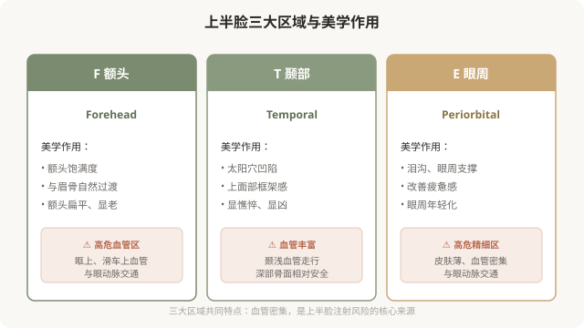
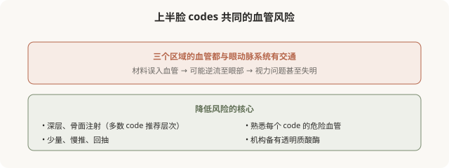

先说结论：上半脸的 MD Codes 涵盖额头（F）、颞部（T）和眼周（E）三大区域，主要解决饱满度、上面部框架感和眼周疲惫感。这些区域共同的特点是血管密集、皮肤和组织特性差异大，是面部注射的高风险区之一。理解这些 codes 的解剖目标和风险层次，有助于你在面诊时听懂方案、评估安全、提出对的问题。
上半脸的整体作用

F 额头 codes，饱满与过渡
额头 codes（如 F1、F2、F3 等）主要负责额头的饱满度和与眉骨的自然过渡。额头的美学要点不是“越饱满越好”，过度填充会形成“寿星公”般的不自然隆起。好的额头注射追求的是平滑、自然的弧度，以及与眉骨、颞部的协调过渡。
额头注射的技术要点：
- 通常采用深层、骨膜上注射，相对安全。
- 注意眶上和滑车上血管走行，它们与眼动脉系统交通。
- 剂量克制，避免过度饱满。
T 颞部 codes，上面部框架
颞部 codes（如 T1、T2、T3 等）负责太阳穴区域的凹陷改善。颞部凹陷会让人显得憔悴、甚至“显凶”，恢复颞部的饱满能显著改善气质。
颞部注射的技术要点：
- 深部骨面注射是相对安全的层次（颞深筋膜深层）。
- 浅层注射风险高（颞浅静脉及其分支走行）。
- 颞部血管丰富，熟悉解剖是安全的核心。
E 眼周 codes，疲惫感的改善
眼周 codes（如 E1、E2 等）针对泪沟、眼周支撑和疲惫感。眼周是面部最精细、最不宽容的区域，皮肤薄、稍有差池就透光、结节或不自然。
眼周注射的技术要点：
- 用柔软、低粘弹性的小粒径产品。
- 骨膜上深层支撑为主，浅层修饰要非常少量。
- 眼周血管与眼动脉系统交通，是高危区域之一。
- 剂量极度克制，宁可分次补。
上半脸的“气质改变”
上半脸的 codes 组合，往往能改变人整体的“气质印象”：
- 颞部 + 额头改善 → 从“憔悴”到“精神”。
- 眼周支撑改善 → 从“疲惫”到“有神”。
- 整体协调 → 从“显老”到“年轻”。
这就是为什么 MD Codes 不仅有“解剖目标”，还有“情感目标”，后面会专门讲。
为什么上半脸 codes 风险高
上半脸三个区域，每一个都涉及与眼动脉系统的交通：

面诊上半脸时该问什么
理解了上半脸 codes，面诊时你可以更具体地问：
- 您建议处理我的哪些 code（如 T1、E1）？为什么是这些？
- 这些 code 推荐的注射层次是深层还是浅层？
- 这个区域的主要血管风险在哪？您怎么规避？
- 机构备有透明质酸酶吗？
- 预期效果是改善饱满度、还是改善疲惫感？
能讲清 code、层次、风险、目标的医生，比只说“给你打打太阳穴”的医生，更值得托付。
一个认知
上半脸 codes 的核心启示：这几个区域美学作用大（改善气质明显），但风险也高（血管与眼部交通）。所以它们的注射对医生经验要求极高，不是不能做，而是必须由懂解剖的医生、在具备急救能力的机构、在你充分知情的前提下做。
本文用于健康教育，不能替代面诊和个体化评估；具体 code 与方案须由具备资质的医师根据个体情况制定，上半脸注射属高风险操作。